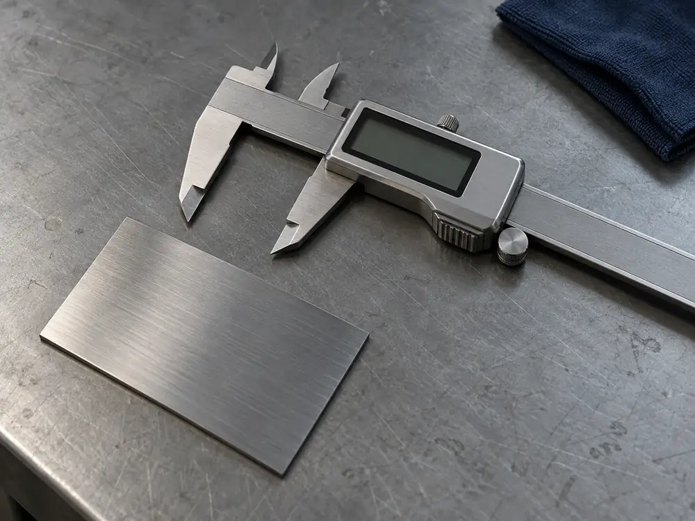
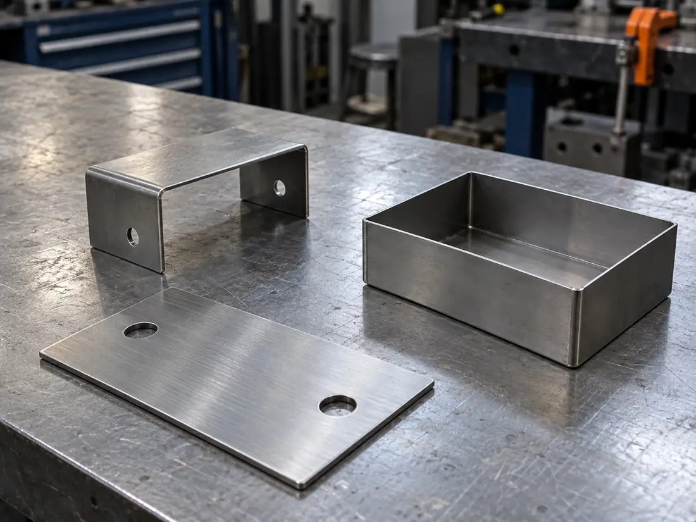

見積もりから納品まで
社内で説明するときに、そのまま使える手順書として書きました。誰が、いつ、何をするかを7段階で示します。
- 見積もりの回答
- 2営業日以内・無料
- 試作の納期
- 5–7営業日・発注から
- 支払い
- 月末締め・翌月末払い

7段階の手順と、担当
- DAY 0当日依頼する側
01問い合わせ
フォームで図面・数量・希望納期を送ります。
受け取った旨を、当日中に担当者から返信します（自動返信ではありません）。
- +1営業日オリメ工業
02図面確認
加工できるか、材質・板厚・公差の指示を確かめます。
不明点があれば、この段階で質問します。
- +2営業日以内オリメ工業
03見積もり回答
金額・納期・できない点とその理由を書面で送ります。
数量違いの金額を並べることもできます。
- ご判断依頼する側
04発注
注文書またはメールで発注します。
断る場合も、連絡は要りません。
- +5〜7営業日オリメ工業
05材料手配・製作
切断→曲げ→溶接の順に製作します。
表面処理がある場合は、協力先へ手配します。
- 製作後オリメ工業
06検査
図面の寸法を測定具で確かめます。
検査記録が必要な場合は、見積もりの段階でお伝えください。
- 出荷日オリメ工業
07納品
配送、または工場での引き取り。
梱包の指定にも対応します。
日数は試作・小ロットでの目安です。

納期の目安（数量 × 工程）
納期は、数量と工程の数で変わります。表面処理（協力先）がある場合は、さらに5〜7営業日を足してください。材料の在庫によって前後します。
- 1〜10 個
- 切断のみ3 営業日
- 切断＋曲げ5 営業日
- 切断＋曲げ＋溶接7 営業日
- 11〜100 個
- 切断のみ5 営業日
- 切断＋曲げ7 営業日
- 切断＋曲げ＋溶接10 営業日
- 101〜500 個
- 切断のみ7 営業日
- 切断＋曲げ10〜15 営業日
- 切断＋曲げ＋溶接要相談
見積もりに要る情報
送る前の確認用です。チェックしても、どこにも送られません。
支払い条件
| 締め・支払い | 月末締め、翌月末に銀行振込 |
|---|---|
| 初めての取引 | 取引の開始に必要な書類を、発注前にお送りします |
| 見積もり | 見積もり後に発注しなくても、費用はかかりません |
| 送料 | 見積もりに含めて表示します |
次に読む見積もり依頼（図面の送り方とフォーム）
決まっていない項目は、空欄のままで送れます。
見積もりを依頼する（見本）